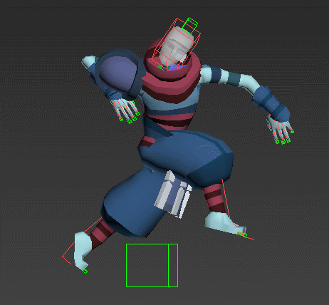
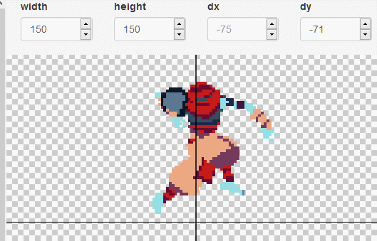
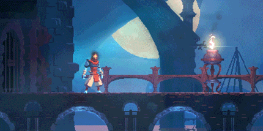

Our goal is to create unique pixel art graphics via a custom rendering pipeline. First we will create a general simulator for mixed fluids with different properties, and apply marching cubes to create a mesh. This then feeds into a cel-shading algorithm, which cel-shades the mesh for a low res render without antialiasing. This pixelating process is inspired by the graphics of dead cells, a video game with amazing pixel graphics and a cool way of making them.
Pixel art animation has a certain personality to it that really fascinates at least one of our group members. But making high quality pixel art is incredibly difficult and time consuming, and to animate it frame by frame traditionally requires a level of artistry that we do not have. 3D animation, though, can be arbitrarily dynamic, as it can be represented with actual motion and kinematics. So we figured that if we could render 3D animations in a convincingly pixelated style - using cel shading to reduce unnecessary noise - we could achieve the personality of a high quality pixel art animation by rasterizing an underlying 3D surface. And what better animated 3D surface than one generated by a fluid simulation! We felt that pixelated fluid dynamics would have a particularly unique aesthetic, and since we will be supporting generalized particle systems beyond just water, we hope to potentially create a wholly original and fully dynamic scene with actual particle interactions. This comes with numerous challenges, of course, including implementing a particle system which can support arbitrary physical properties, the ability to convert a particle system into a surface mesh, and the ability to convert a cel shaded mesh (the shading of which we will likely not implement ourselves) into a pixelated form. To tackle this, we plan to build off of the existing project 4 codebase, which already supports rendering dynamically generated meshes (i.e. the cloth) with GPU shaders. From there, we will need to come up with a customizable dynamic model to represent particles of different classes, and then we will likely use marching cubes to generate a mesh based on where the particles are concentrated, and in what shape.
At the absolute minimum we will deliver a general script for multiclass fluid simulation with an output rendered with shaders colorizing different particle types. This will involve starting from the project 4 codebase and repurposing its current mesh generation to form a tight bounding surface over the particle simulation by the marching cubes algorithm. Using this process we will render videos of the unique interactions of this particle sim exploring ideas such as interacting fire and water, negative mass, or soft-body solids. Our final product will be a video or several videos demonstrating the most impressive capabilities of the system.
The main thing we hope to deliver past the particle simulation is the creation of pixel art graphics from our particle simulation. In addition, while our particle simulation may use simpler overall physics than other models, we hope that this will allow us to make it more efficient to the point of being able to render it in real time. This would be accomplished through standard code optimization, as well as possibly heuristics for simpler time update steps. Together these would allow for this code to be used as a way to have dynamic, live, and interactive backgrounds in 2d pixel art games, where it is difficult to render many graphics in a satisfying way.
Week 1: Rewriting project 4 to do the particle simulation
Week 2: Implement marching cubes algorithm
Week 3: Optimization
Week 4: Time allowing add the pixel art renderer
|  |  |  |